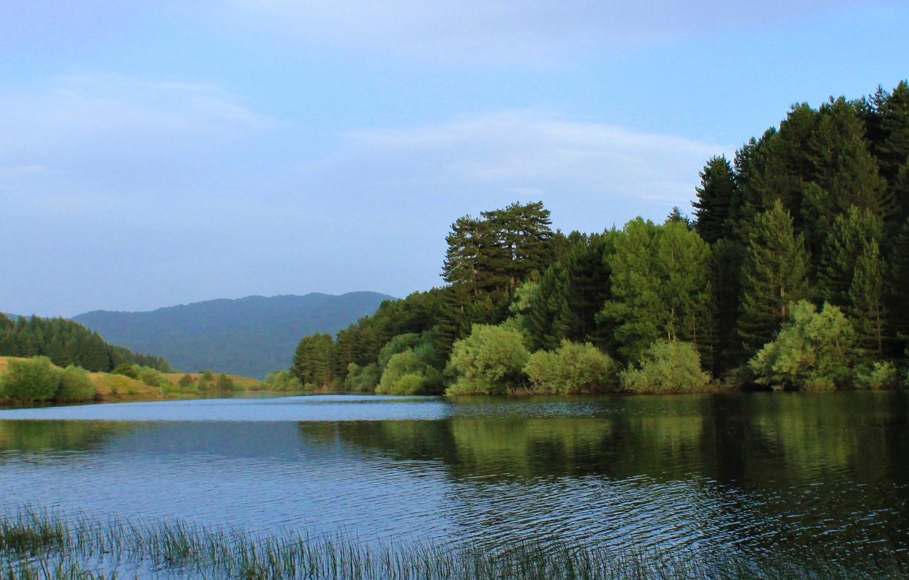

Parco Nazionale della Sila
Il Parco Nazionale della Sila, situato nel cuore della Calabria, è un altopiano montuoso che si estende su circa 150.000 ettari, caratterizzato da boschi secolari, laghi pittoreschi e antichi borghi rurali.
Istituito come parco nel 2002, ma già riconosciuto come Riserva della Biosfera UNESCO, questo territorio vanta una storia millenaria, intrecciata con le tradizioni agro-pastorali e con un patrimonio culturale che comprende feste popolari, artigianato e enogastronomia di eccellenza.
I visitatori che scelgono di esplorare la Sila possono scoprire un ambiente montano unico nel contesto mediterraneo, in cui la natura e l’uomo hanno saputo convivere in modo armonioso per secoli.
Attività specifiche


Cenni su flora
La Sila è coperta prevalentemente da foreste di faggio, pino laricio e abete bianco, che in autunno si tingono di colori spettacolari. Le parti più alte dell’altopiano raggiungono circa 1.900 metri e ospitano specie endemiche, adattate a condizioni climatiche rigide per la latitudine.
Fauna
L’area è un rifugio prezioso per il lupo appenninico, simbolo del parco, e per altre specie come il cervo e il capriolo, reintrodotti dopo aver rischiato l’estinzione locale. Rapaci come la poiana e il falco pecchiaiolo sorvolano i cieli, mentre nei torrenti di montagna si possono trovare trote e altre specie di pesci d’acqua dolce. Il sottobosco è ricchissimo di funghi e di piante officinali, sfruttate dalla tradizione erboristica calabrese.
Punti di interesse
Lago Cecita
un grande invaso artificiale incastonato tra foreste di faggio e abete bianco. Qui si trova anche il Centro Visita Cupone, gestito dall’Ente Parco, che offre percorsi didattici, un giardino geologico e recinti faunistici dove è possibile avvicinare cervi, daini e lupi in semi-cattività

Lago Arvo
Un altro specchio d’acqua di grande fascino è il Lago Arvo, meta ideale per rilassarsi in barca o praticare sport acquatici a bassa intensità. La Riserva Naturale del Fallistro, conosciuta anche come i Giganti della Sila, ospita monumentali pini larici e pini neri centenari. Borghi come San Giovanni in Fiore, Camigliatello Silano e Lorica conservano tradizioni artigianali e culinarie, tra cui la lavorazione della lana, la tessitura e la produzione di formaggi tipici.